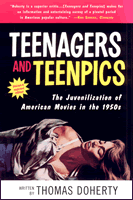

The classic book on teenagers and their films, thoroughly revised and expanded
The classic book on teenagers and their films, thoroughly revised and expanded


 The classic book on teenagers and their films, thoroughly revised and expanded
The classic book on teenagers and their films, thoroughly revised and expanded

|  |
Teenagers and TeenpicsThe Juvenilization of American Movies in the 1950sRevised and Expanded EditionThomas Dohertypaper EAN: 978-1-56639-946-3 (ISBN: 1-56639-946-7) |
"Thomas Doherty is a wonderful film historian, as well as an astute cultural observer and a scholarly live wire. His account of Hollywood youth movies is as sensitive to the craziness of the marketplace as that of the movies themselves-smart, detailed, and near-definitive."
—J. Hoberman, film critic, The Village Voice
Teenagers and Teenpics tells the story of two signature developments in the 1950s: the decline of the classical Hollywood cinema and the emergence of that strange new creature, the American teenager. Hollywood's discovery of the teenage moviegoer initiated a progressive "juvenilization" of film content that is today the operative reality of the American motion picture industry.
The juvenilization of the American movies is best revealed in the development of the 1950s "teenpic," a picture targeted at teenagers even to the exclusion of their elders. In a wry and readable style, Doherty defines and interprets the various teenpic film types: rock 'n' roll pictures, j.d. films, horror and sci-fi weirdies, and clean teenpics. Individual films are examined both in light of their impact on the motion picture industry and in terms of their important role in validating the emerging teenage subculture. Also included in this edition is an expanded treatment of teenpics since the 1950s, especially the teenpics produced during the age of AIDS.
Excerpt available at www.temple.edu/tempress
"Thomas Doherty's Teenagers and Teenpics, a fascinating study of Hollywood's response to the newly discovered youth market in the 1950s, felicitously brings together solid research, sensitive critical analysis, and an engaging writing style. Too long out of print, Doherty's book, which now brings the saga of 'teenpics' up to date, remains an indispensable guide to a significant aspect of American culture."
—Michael Anderegg, author Orson Welles, Shakespeare, and Popular Culture
"For an example of real scholarship in the field of cultural studies, one cannot do better than Thomas Doherty's Teenagers and Teenpics—an astute introduction to the 'juvenilization,' not just of Hollywood, but of America's post-war pop culture more generally."
—James Miller, Director of Liberal Studies, New School University, and author of Flowers in the Dustbin: The Rise of Rock and Roll, 1947-1977
"Doherty's combination of business history, social history, and narrative analysis is seamless and compelling, representing one of the heights of film criticism since 1980.
—H-Net
Acknowledgments
1. American Movies as a Less-than-Mass Medium
2. A Commercial History
3. The Teenage Marketplace
4. Rock 'n' Roll Teenpics
5. Dangerous Youth
6. The Horror Teenpics
7. The Clean Teenpics
8. Generation after Generation of Teenpics
Notes
Selected Filmography
Index to Film Titles
General Index
 | Thomas Doherty is Associate Professor of American Studies and Chair of the Film Studies Program at Brandeis University. He is the author of two previous books, including Pre-Code Hollywood: Sex, Immorality, and Insurrection in American Cinema, 1930-1934, which was a New York Times Notable Book for 1999. |
Cinema Studies
History
American Studies
© 2015 Temple University. All Rights Reserved. This page: http://www.temple.edu/tempress/titles/1602_reg.html.